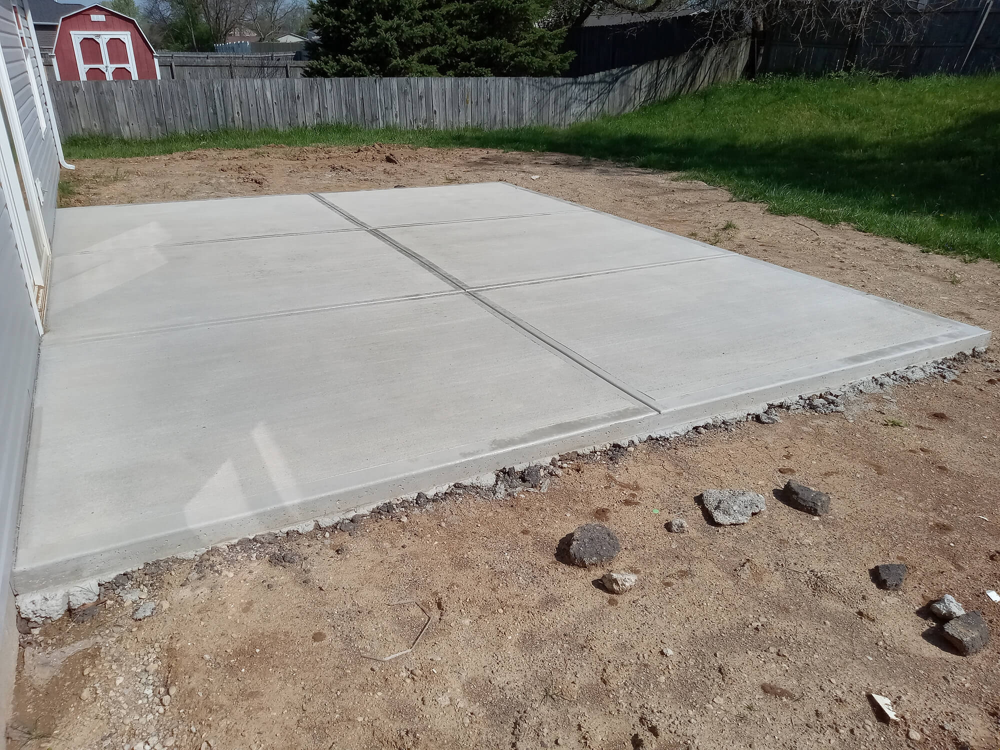

Concrete Shed Base Enfield
A solid shed starts with a solid foundation. If you’re looking for a concrete shed base in Enfield, this service is designed for homeowners and property owners who want a level, durable, long-lasting base that’s built properly from the ground up.
From compact garden sheds to larger log cabins and workshops, a professionally installed concrete base provides the stability and lifespan that timber, paving, or sleepers simply can’t match. This Enfield-focused service combines careful ground preparation, correct concrete depth, and proven construction standards to deliver bases that perform well for decades.
If you’d like clear advice or a fast quote, calling is the quickest way to get started.
✔
Enfield-focused
Local ground knowledge
✔
Competent installation
Correct depth & prep
✔
Fast response
Clear timelines
Service overview
Professional Concrete Shed Base Installation in Enfield
Shed base installation in Enfield isn’t just about pouring concrete. It’s about understanding ground conditions, expected loads, drainage requirements, and how the finished base will support the structure above it over time.
Each concrete base for shed Enfield projects is approached with precision and care. The goal is simple: a base that stays flat, drains correctly, and doesn’t shift or crack under normal use.
This service is suitable for:
- Garden sheds and storage buildings
- Summerhouses and garden rooms
- Log cabins and timber structures
- Small workshops and hobby spaces
If you’ve searched for concrete base installers near me and want a service that feels established, reliable, and local to Enfield, you’re in the right place.
Why foundations matter
Why a Proper Concrete Base Matters
 Proper depth. Clean edges. Level finish.
Proper depth. Clean edges. Level finish.
Even the best shed will deteriorate quickly if it’s installed on an uneven or poorly prepared surface. Common problems caused by inadequate bases include:
- Doors sticking or binding over time
- Water pooling on the floor or around the structure
- Timber frames twisting due to movement
- Premature rot and structural wear
A well-designed garden shed concrete base in Enfield eliminates these issues. Correct depth, reinforcement where required, and a properly compacted sub-base ensure the slab remains stable and level long-term.
Installation method
The Shed Base Installation Process
1. Ground Preparation
Good concrete starts below ground level. Topsoil is removed to reach a stable base, then a crushed stone sub-base is installed and mechanically compacted. A geotextile membrane may be used where ground conditions require extra stability and weed control.
Strong sub-base compaction reduces settlement and keeps the base level for decades.
2. Depth & Reinforcement
Concrete depth is selected based on shed size and intended use. Light garden sheds typically require around 100–120mm, while heavier structures such as log cabins or workshops may need thicker slabs and steel reinforcement.
Reinforcement options include mesh or rebar, used where needed to distribute loads and reduce cracking.
3. Drainage & Falls
Standing water shortens the life of both concrete and timber. Subtle falls are built into the slab to encourage runoff, and drainage details are planned to suit the site and structure.
This helps protect sheds, keeps floors dry, and prevents long-term moisture problems.
4. Finishing & Accuracy
Once poured, the concrete is finished to a smooth, level surface. Measurements are double-checked before completion to ensure sheds sit square, doors open freely, and floors remain flat.
The result is a clean, professional base ready for immediate or future shed installation.
CALL FOR A SAME DAY QUOTE
Extended uses
Concrete Bases for More Than Just Sheds
While many customers need a concrete base for shed Enfield, this service also covers:
- Summerhouse bases
- Log cabin slabs
- Garden room foundations
- Small workshop bases
- Paving-ready concrete platforms
Here you can find information that may be useful to you read below:
Should you have an Enfield concrete base for a garden shed? Click here
Each base is designed to suit the structure it supports, rather than using a one-size-fits-all approach.
Local trust
A Local Enfield-Focused Service You Can Trust
This concrete shed base service is built around local knowledge. Understanding Enfield ground conditions, access challenges, and typical garden layouts helps ensure smoother installations and realistic timelines.
Homeowners choose this service because it feels:
- Established and dependable
- Clear and straightforward
- Focused on long-term performance
- Easy to deal with from first call to completion
Clear communication and practical advice are prioritised throughout, especially if you’re unsure what type of base your shed requires.
Service area
Serving Enfield & surrounding areas
Local installations carried out across Enfield and nearby neighbourhoods.
Timelines
How Long Does a Concrete Shed Base Take?
Most standard shed bases can be completed within a day, including preparation and pouring. Larger or reinforced bases may take longer, particularly if curing time or staged work is required.
You’ll always receive realistic timeframes upfront, based on the size and complexity of your project.
Long-term value
A Long-Term Investment in Your Property
A professionally installed garden shed concrete base Enfield isn’t just about today — it’s about protecting your shed, tools, and garden buildings for years to come. With correct preparation and materials, concrete bases require very little maintenance and offer excellent value over their lifespan.
For property owners, landlords, and homeowners alike, a quality base reduces future repair costs and improves the overall usability of outdoor structures.
Get started
Get a Quote for Concrete Shed Base Installation in Enfield
If you’re planning a new shed or replacing an existing base, getting the specification right from the start saves time and money.
To discuss your project, get advice on concrete depth, or request a quote for shed base installation Enfield, call today. Speaking directly allows your requirements to be understood quickly and ensures you receive accurate guidance for your specific site.
Call now for a free, no-pressure quote and tailored advice for your concrete shed base in Enfield.